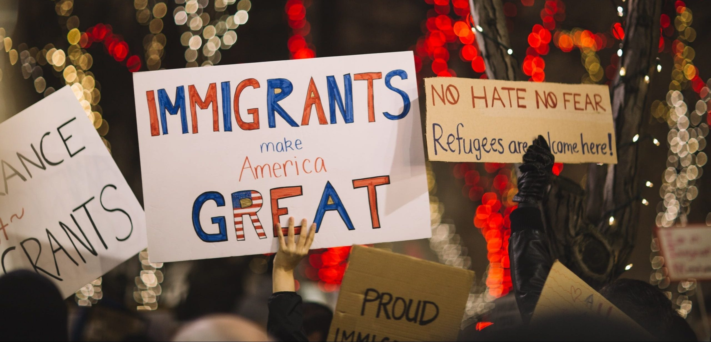
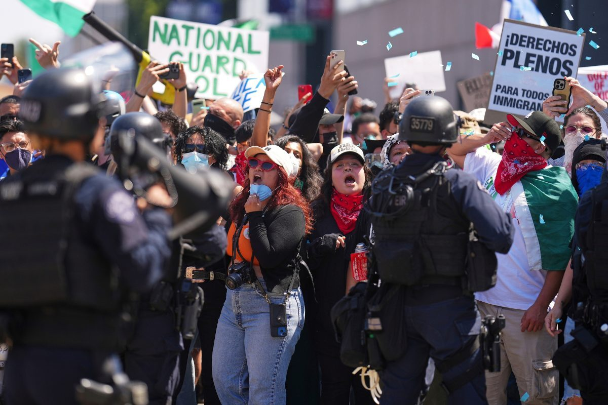
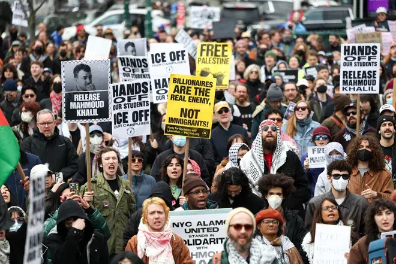

Hispanics make up about one-third of New York City"s population, with many spending half of their income on rent. That is, of course, if they can even find a home to live in a city suffering from an affordable housing crisis.
Some U.S. historical policies and practices have led to mental and physical health risks and challenges, and related long-term health outcomes, for Hispanic/Latino people. Meaning that hispanics are safe when outside because of I.C.E.
I.C.E. involment
`
Each day Hispanics are being taken away by I.C.E so they can't be with their families. Over ten of thousands of hispanics have been detained by I.C.E. mainly latinos being 90% of the arrests.Total Detainees: ICE held 65,765 people in detention according to data tracked by the TRAC Immigration Project as of July 11, 2026. Racism and discrimination are constant sources of stress for many Hispanic/Latino people.Nearly one third of Hispanic/Latino people in the U.S. say they have personally been discriminated against because of their ethnicity
The fight towards the end

Number One
3 / 3

Number Two
How to be safe from I.C.E.
Ask if you are free to leave: Say "Am I free to go?" If the officer says yes, calmly walk away.
Remain silent: You do not have to answer questions about where you were born, your citizenship, or how you entered the country. Say clearly that you want to remain silent.
Do not consent to a search: Say "I do not consent to this search" if agents try to search your pockets or belongings
Do not run or resist: Stay calm and keep your hands visible; do not physically fight or provide false documents.
What to do if you see I.C.E. near your street
If you see Immigration and Customs Enforcement (ICE) agents on your street, stay calm, do not interfere with operations, and safely record details or notify local legal aid networks. Look for things like the Department of Homeland Security logo, which has an eagle on it, and agency abbreviations “ICE,” “HSI,” or “DHS” written on officers’ vests or clothing.
what to do if you are being detained bt I.C.E.
If you are detained by ICE, you must remain silent, do not sign anything, and ask for a lawyer immediately.
Actions to take
Do not answer questions about your birth country or how you entered the U.S.
Do not sign documents, papers, or forms before speaking to an attorney.
Share your A-number (alien registration number) with family members so they can track your case.
Locate a facility or track a detained person using the official ICE Detainee Locator.
Call for help or report issues using resources like the Freedom for Immigrants Detention Hotline.

What to do if you are being pulled over by I.C.E.
If ICE (Immigration and Customs Enforcement) stops your car, you should stay calm, pull over safely, and remember your rights. You must stop the car and keep your hands visible, but you do not have to answer questions about your status or consent to a search.
Actions to take during the stop
Pull over safely: Stop your car right away, turn off the engine, and turn on the inside light if it is dark.
Keep windows partial: Roll your window down just a little bit to talk and pass documents through. Opening it fully lets agents reach inside.
Show required ID: If you are the driver, show your driver's license, registration, and insurance if asked. Passengers do not have to show ID.
Excersising your RIGHTS
Remain silent: You do not have to answer questions about where you were born or your legal status. Say clearly, "I am exercising my right to remain silent."
Refuse searches: Agents cannot search your car without your consent, probable cause, or a signed judicial warrant. Say clearly, "I do not consent to this search."
Ask if you are free to leave: Ask, "Am I free to leave?" If they say yes, calmly drive away. Do not run or physically resist if they detain you.
Do not show false papers: Never show fake documents or lie about your identity.